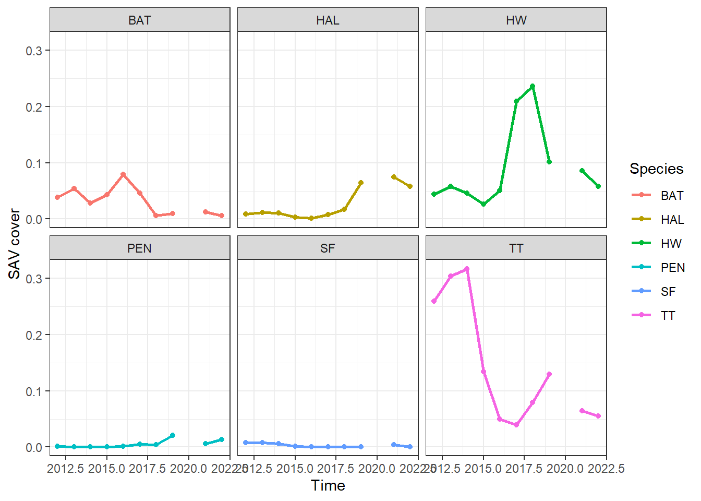

library(tidyverse)
## ── Attaching core tidyverse packages ──────────────────────── tidyverse 2.0.0 ──
## ✔ dplyr 1.1.2 ✔ readr 2.1.4
## ✔ forcats 1.0.0 ✔ stringr 1.5.0
## ✔ ggplot2 3.4.3 ✔ tibble 3.2.1
## ✔ lubridate 1.9.2 ✔ tidyr 1.3.0
## ✔ purrr 1.0.2
## ── Conflicts ────────────────────────────────────────── tidyverse_conflicts() ──
## ✖ dplyr::filter() masks stats::filter()
## ✖ dplyr::lag() masks stats::lag()
## ℹ Use the conflicted package (<http://conflicted.r-lib.org/>) to force all conflicts to become errors
df = read_csv('data/rankinSAV.csv')
## Rows: 301 Columns: 9
## ── Column specification ────────────────────────────────────────────────────────
## Delimiter: ","
## chr (1): BASIN
## dbl (8): YEAR, STATION, TT, HW, SF, HAL, BAT, PEN
##
## ℹ Use `spec()` to retrieve the full column specification for this data.
## ℹ Specify the column types or set `show_col_types = FALSE` to quiet this message.
dim(df)
## [1] 301 9Homework 1 - Solutions
- (2 pts) Load the rankinSAV.csv dataset as a dataframe or tibble. Short answer question 1: What are the dimension of the dataset?
Short answer: 301 rows and 9 columns
- (3 pts) Add 2 new columns to the dataframe/tibble. One should contain the sum of the cover of all of the seagrass species (total_seagrass), and the other should contain the the sum of the cover of all of the macroalgae species (total_macroalgae). Short answer question 2: What is the maximum value for total seagrass and total macroalgae and in what years did they occur?
df = read_csv('data/rankinSAV.csv') |>
mutate(total_seagrass = TT + HW + SF,
total_macroalgae = HAL + BAT + PEN)
## Rows: 301 Columns: 9
## ── Column specification ────────────────────────────────────────────────────────
## Delimiter: ","
## chr (1): BASIN
## dbl (8): YEAR, STATION, TT, HW, SF, HAL, BAT, PEN
##
## ℹ Use `spec()` to retrieve the full column specification for this data.
## ℹ Specify the column types or set `show_col_types = FALSE` to quiet this message.
# total seagrass
ts = df |>
filter(total_seagrass == max(total_seagrass, na.rm =T))
ts
## # A tibble: 1 × 11
## BASIN YEAR STATION TT HW SF HAL BAT PEN total_seagrass
## <chr> <dbl> <dbl> <dbl> <dbl> <dbl> <dbl> <dbl> <dbl> <dbl>
## 1 RAN 2012 6 0.625 0.00375 0 0.00375 0 0 0.629
## # ℹ 1 more variable: total_macroalgae <dbl>
# total seagrass
tm = df |>
filter(total_macroalgae == max(total_macroalgae, na.rm =T))
tm
## # A tibble: 1 × 11
## BASIN YEAR STATION TT HW SF HAL BAT PEN total_seagrass
## <chr> <dbl> <dbl> <dbl> <dbl> <dbl> <dbl> <dbl> <dbl> <dbl>
## 1 RAN 2013 14 0.00375 0.15 0 0.0075 0.438 0 0.154
## # ℹ 1 more variable: total_macroalgae <dbl>Short answer: The max total seagrass was 0.62875 in 2012. The max total macroalgae was 0.445 in 2013.
- (2 pts) Create a new tibble/dataframe that contains only the year, total seagrass, and total macroalgae.
d = df |>
select(YEAR, total_seagrass, total_macroalgae)- (5 pts) Convert the new tibble/dataframe from question 3 into long format for the two SAV metrics and summarize the mean and SD for each taxonomic group in each year. Short answer question 3: What are the years with the highest and lowest cover for seagrass and macroalgae?
dm = d |>
pivot_longer(total_seagrass:total_macroalgae,
names_to = 'SAV', values_to = 'cover') |>
group_by(YEAR, SAV) |>
summarize(mean = mean(cover, na.rm = T),
sd = sd(cover, na.rm = T))
## `summarise()` has grouped output by 'YEAR'. You can override using the
## `.groups` argument.
dm
## # A tibble: 22 × 4
## # Groups: YEAR [11]
## YEAR SAV mean sd
## <dbl> <chr> <dbl> <dbl>
## 1 2012 total_macroalgae 0.0479 0.0730
## 2 2012 total_seagrass 0.312 0.146
## 3 2013 total_macroalgae 0.0660 0.121
## 4 2013 total_seagrass 0.369 0.113
## 5 2014 total_macroalgae 0.0391 0.0515
## 6 2014 total_seagrass 0.369 0.0695
## 7 2015 total_macroalgae 0.0463 0.0399
## 8 2015 total_seagrass 0.162 0.0561
## 9 2016 total_macroalgae 0.0823 0.0882
## 10 2016 total_seagrass 0.100 0.104
## # ℹ 12 more rows
sg = dm |> filter(SAV == 'total_seagrass')
sg$YEAR[which.max(sg$mean)]
## [1] 2013
sg$YEAR[which.min(sg$mean)]
## [1] 2016
ma = dm |> filter(SAV == 'total_macroalgae')
ma$YEAR[which.max(ma$mean)]
## [1] 2019
ma$YEAR[which.min(ma$mean)]
## [1] 2018Short answer: The year with the highest seagrass cover is 2013 and lowest is 2016. The year with the highest macroalgae cover is 2019 and lowest is 2018.
- (3 pts) Plot the mean cover for each year for all 6 species of SAV, with a different species in a different panel.
lg = df |>
group_by(YEAR) |>
summarize(across(TT:PEN,mean) )|>
pivot_longer(TT:PEN, names_to = 'SAV', values_to = 'cover')
ggplot(lg, aes(YEAR, cover, color = SAV)) +
geom_point() +
geom_line(size = 1) +
labs(x = 'Time', y = 'SAV cover', color = 'Species') +
facet_wrap(~SAV)+
theme_bw()
## Warning: Using `size` aesthetic for lines was deprecated in ggplot2 3.4.0.
## ℹ Please use `linewidth` instead.
## Warning: Removed 6 rows containing missing values (`geom_point()`).
- (2 pts) Convert the percent cover of seagrass into three categories: low = < 0.30, intermediate = 0.31-0.60, and high = > 0.60.
df = df |>
mutate(sg = case_when(
total_seagrass <= 0.30 ~ 'low',
between(total_seagrass, 0.30,0.60) ~ 'intermediate',
total_seagrass > 0.60 ~ 'high'
))- (5 pts) Create a conditional (i.e.
TRUE/FALSE) vector to compare if seagrass cover is higher compared to the year before. Hint - this can be done with a for loop
# for loop
s = df |>
group_by(YEAR) |>
summarize(sg = mean(total_seagrass)) |>
mutate(comp = NA)
for (i in 2:nrow(s)){
s$comp[i] = s$sg[i] > s$sg[i-1]
}
#dplyr
sg = df |>
group_by(YEAR) |>
summarize(sg = mean(total_seagrass)) |>
mutate(comp = sg>lag(sg))- (3 pts) Plot the count of years where seagrass cover is higher than the year before and the count of years where seagrass cover is lower than the year before.
sgc = s |>
count(comp) |>
drop_na()
ggplot(sgc, aes(comp, n, fill = comp)) +
geom_col() +
labs(x = 'SG cover(t) > sG cover(t-1)', y = 'count') +
theme_bw()+
theme(legend.position = 'none')